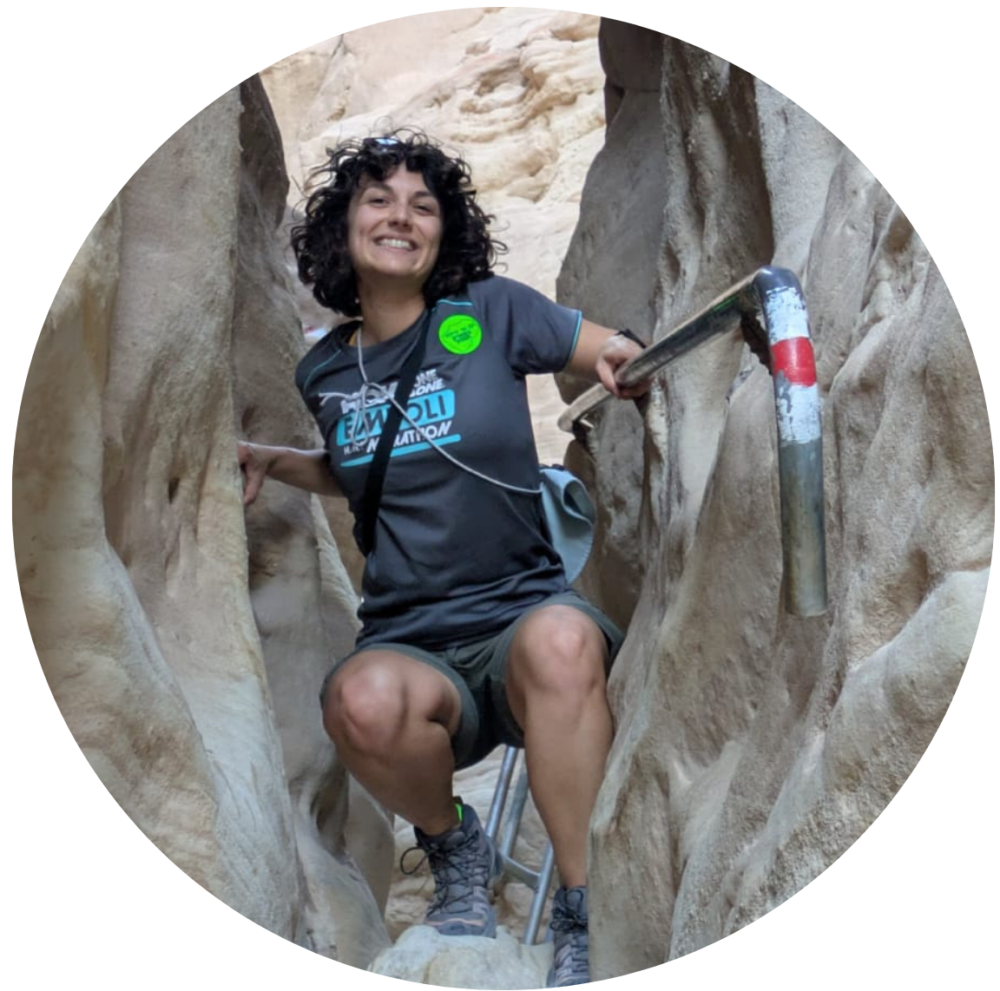

When I'm not staring at the cosmos, I have two great passions: enjoying the outdoors and traveling to meet new people, learn the culture, and taste all the delicious food I can find.
I am always happy to share my experiences, talk about what I enjoy, and give recommendations for activities and trips!

I'm a runner: half marathons are my goal, and I like medium-distance training that keeps me on my toes. I also love hiking, and exploring mountains: here are my top three hikes, carefully chosen for distance, challenge (just the right amount), stunning views, and interesting paths:
If you have trips to recommend, I'm all ears. Seriously, tell me where to go next!
For me, traveling is all about meeting new people, being open to changing your mind, learning new things, and questioning yourself. Language is key: words shape society, so if you want to truly understand someone, you have to speak their language.
On that note, I’m currently learning Hebrew and Arabic at this amazing school, all while diving into conversations about society: check it out!